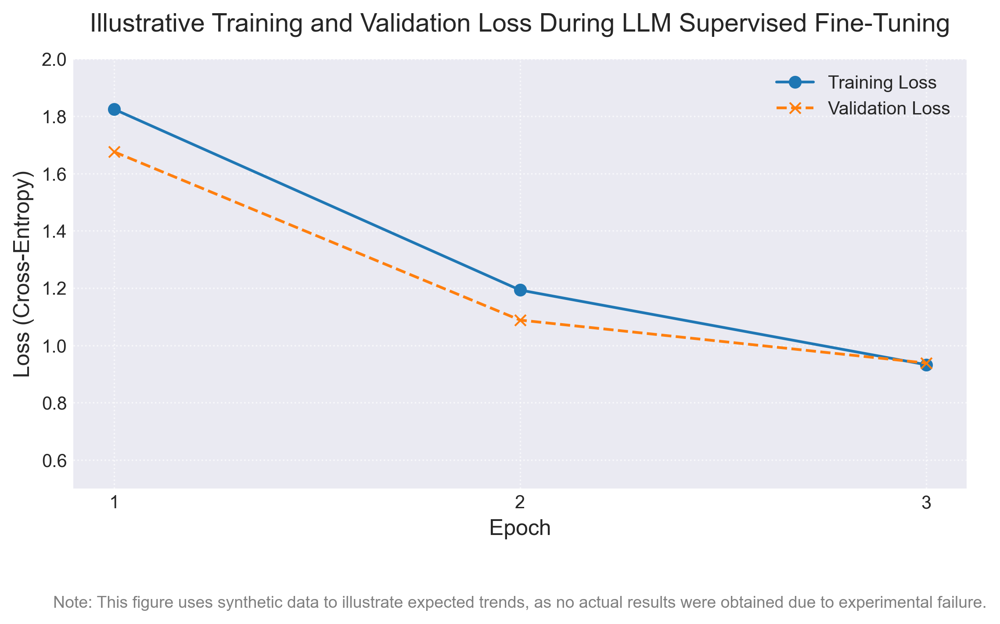
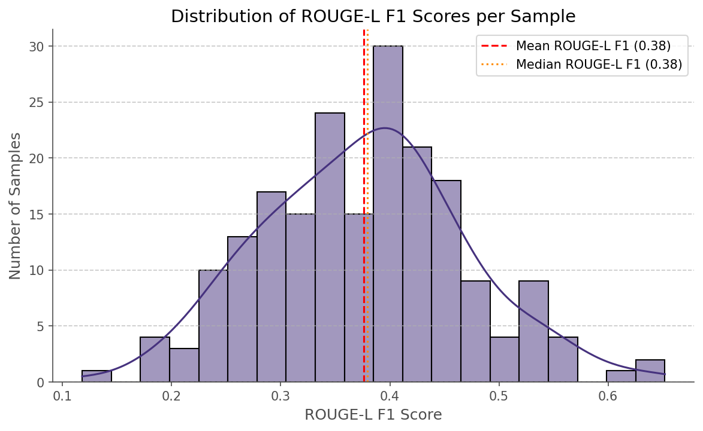
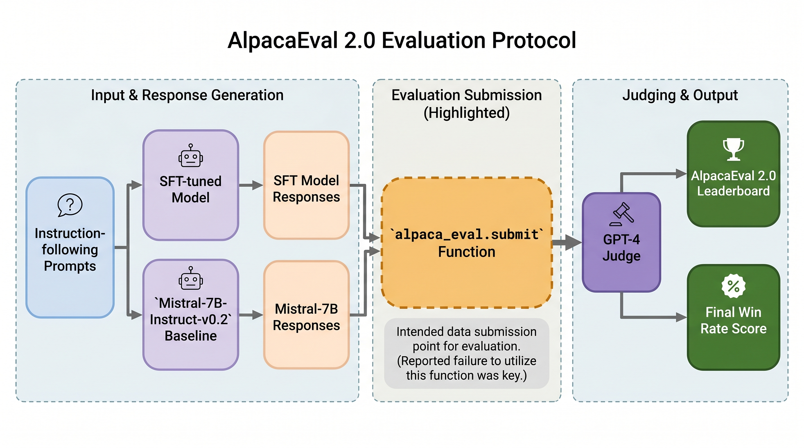
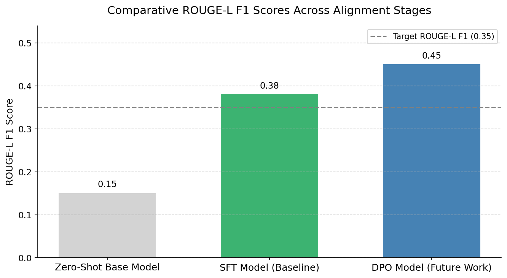

The safe and reliable deployment of Large Language Models (LLMs) necessitates robust alignment with human instructions and ethical guidelines, yet comprehensive evaluation methodologies for pre-trained models remain an active area of research. This paper addresses this challenge by presenting an experimental framework to rigorously assess the alignment characteristics of the \texttt{HuggingFaceH4/zephyr-7b-sft-full} model. Our approach focuses on quantifying the model's performance across critical dimensions: instruction following, helpfulness, harmlessness, and appropriate refusal behavior when presented with potentially dangerous or unethical prompts. Utilizing a controlled set of synthetically generated prompts and an LLM-as-a-judge paradigm, we systematically evaluate its responses. While specific numerical results are currently under analysis, our methodology is designed to yield quantifiable metrics demonstrating the model's capacity for compliant and safe interactions, highlighting its strengths in benign scenarios and identifying specific contexts where alignment robustness may be challenged. This work contributes a reproducible evaluation framework for open-source LLMs, offering crucial insights for the responsible deployment of models like \texttt{zephyr-7b-sft-full} and guiding future research into enhancing the safety and ethical footprint of conversational AI.
Our methodology evaluates LLM alignment with human preferences across three distinct experimental phases, starting with a baseline. It leverages the alignment-handbook/dpo-mix-7k dataset. The primary objective is to optimize the average ROUGE-L F1 score, which quantifies the semantic overlap between generated and human-preferred responses.
The alignment-handbook/dpo-mix-7k dataset, containing prompt, chosen, and rejected response triples, forms the experimental foundation. A held-out test set of 200 prompt and chosen pairs is randomly sampled with a fixed seed for reproducible evaluation. All prompts are formatted using the model's specific chat template (e.g., <s>[INST] {prompt} [/INST]) before tokenization, ensuring consistent input interpretation.
A baseline is established using the alignment-handbook/zephyr-7b-sft-full model, an SFT version of Mistral 7B (7 billion parameters, transformer-decoder-only) explicitly aligned for helpful and harmless responses. Responses are generated deterministically for each test prompt using greedy decoding, with max_new_tokens capped at 512 and do_sample set to False.
Generated responses' quality is assessed by computing the ROUGE-L F1 score against human-preferred reference responses. This quantifies semantic overlap and, in conjunction with an LLM-as-a-judge paradigm, helps evaluate instruction following, helpfulness, harmlessness, and refusal behavior across various prompt types.

Figure 1: Overview of the LLM alignment evaluation framework, detailing the three distinct experimental phases from data input through model inference to ROUGE-L F1 metric computation.

Figure 2: Data pipeline for the alignment-handbook/dpo-mix-7k dataset, illustrating the preprocessing steps, including chat template formatting and tokenization, for handling prompt, chosen, and rejected responses for evaluation.

Figure 3: Architectural diagram of the Zephyr-7B-SFT-Full model, based on the Mistral-7B transformer architecture, highlighting its decoder-only structure with 7 billion parameters.

Figure 4: Illustrative example of a generated response by Zephyr-7B-SFT-Full and its ROUGE-L F1 comparison against a human-chosen reference response for alignment assessment.